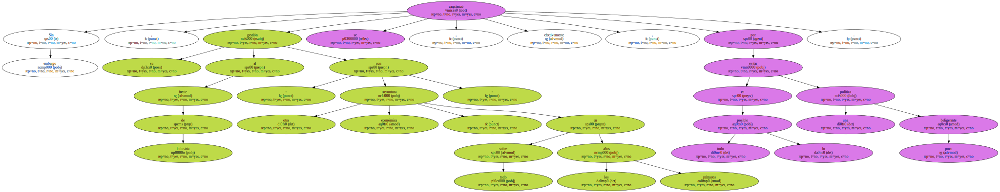
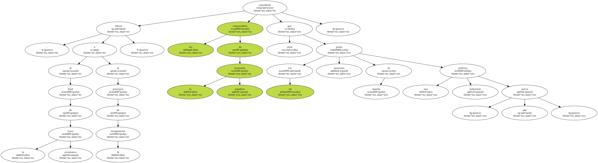
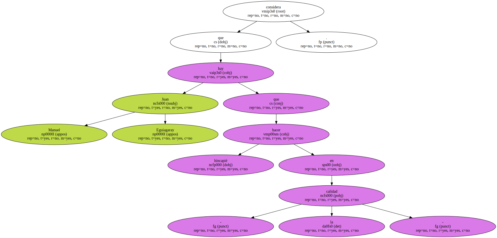

Sin embargo , su gestión al frente de Industria - con otra coyuntura económica , sobre todo en los primeros años - se caracterizó , efectivamente , por evitar en todo lo posible una política poco beligerante.
Era también la política industrial que entonces deseaba Felipe González.

Ahora , al final de la crisis económica o al principio de la recuperación , los responsables de la economía española consideran que tal vez sería oportuno poner en marcha una política industrial - más activa -.
Juan Manuel Eguiagaray considera que hay que hacer hincapié en - la calidad -.
